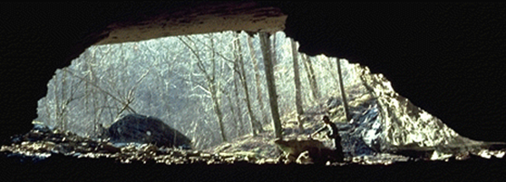
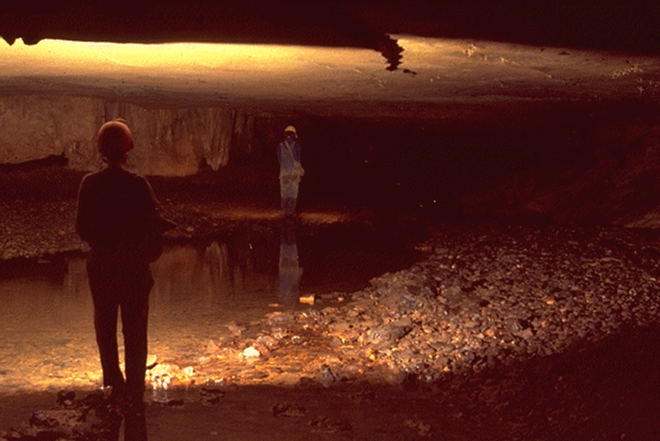
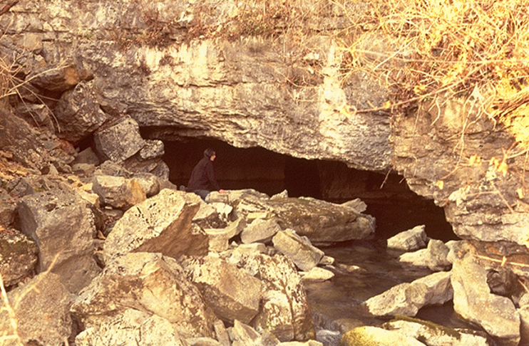
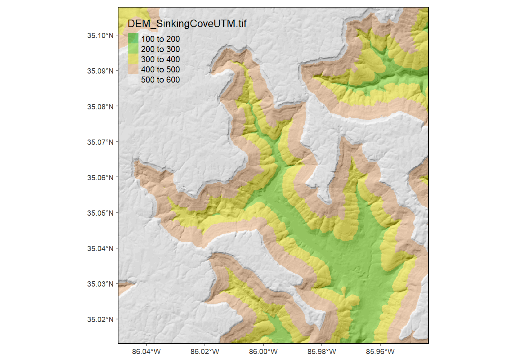
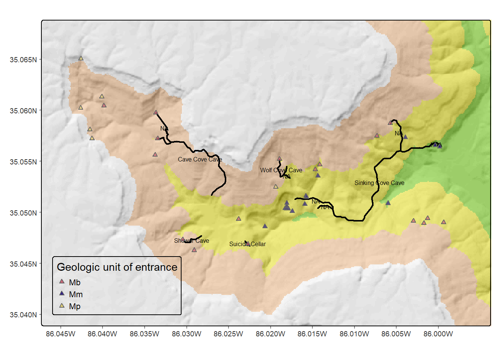
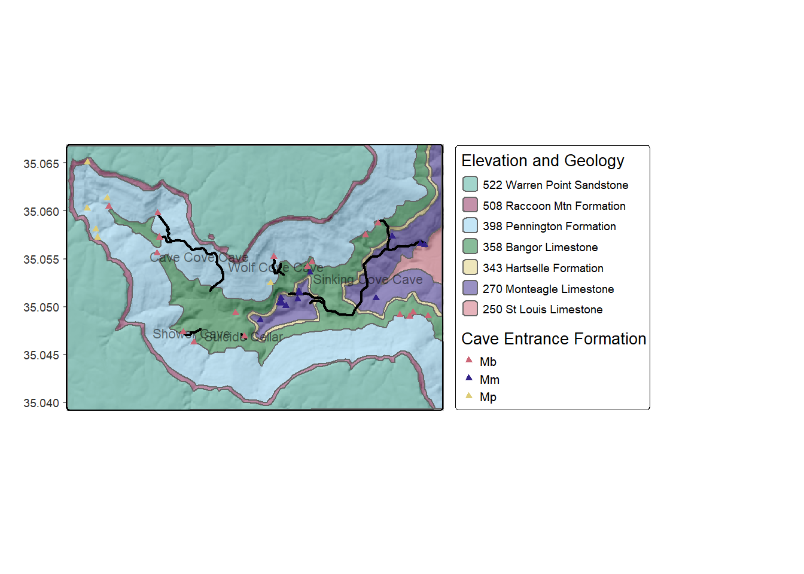
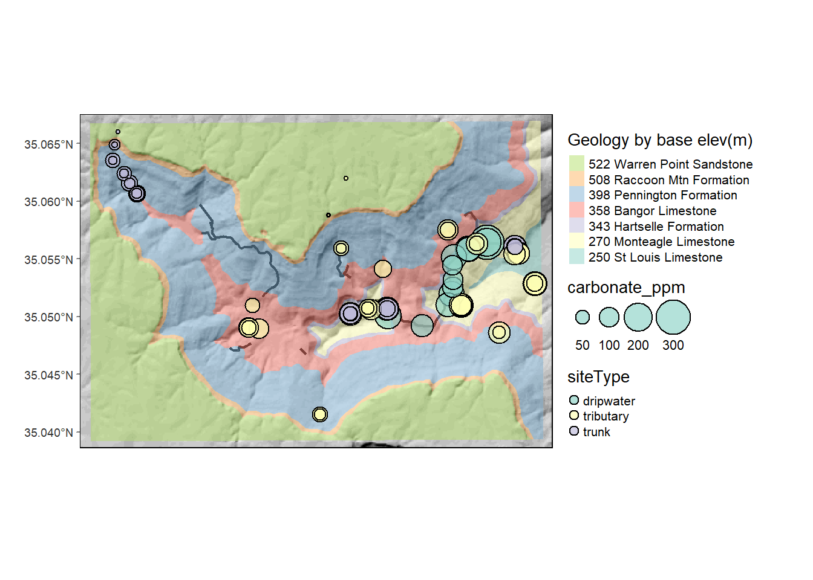
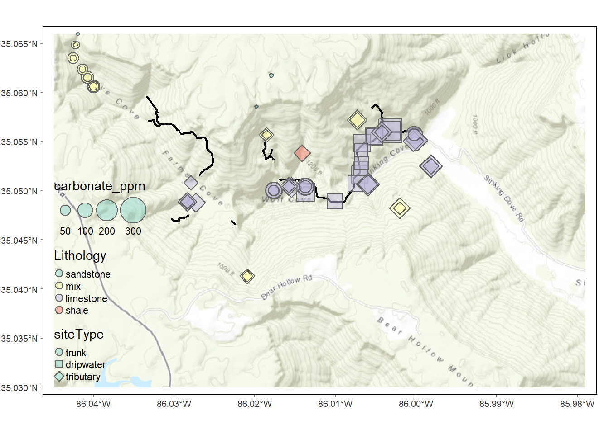

4 Terrain mapping, caves and water samples in a karst
Sinking Cove, Tennessee is a karst valley system carved into the Cumberland Plateau, a nice place to explore mapping alternatives employing basemaps and environmental measurement point symbolization, from a hydrologic and geochemical study (Davis and Brook 1993) of karst and cave development (Figures 4.1, 4.2, and 4.3).
- We’ll build static maps in tmap’s “plot” mode by creating our own basemap from a hillshade (created with terra’s
terrainfunction) combined with hypsometric tinting of elevation using theterrain.colorpalette. - We’ll also employ maptiles to download an online basemap into a raster to continue using a static map.
- We’ll build interactive maps with tmap’s leaflet-based “view” mode, allowing us to zoom in as well as select alternative online basemaps.

FIGURE 4.1: Cave Cove Cave Entrance

FIGURE 4.2: Sinking Cove Cave

FIGURE 4.3: Sinking Cove Cave spring
4.1 Creating a basemap from a DEM, using hillshade and terrain shading
We’ll read in a digital elevation model (DEM) derived from USGS data, and use it to build a terrain basemap, using a hillshade and hypsometric coloring with a 24-level terrain.color palette, and start with a map showing the overall Sinking Cove Area (Figure 4.4).
tmap_mode("plot")
DEM <- rast(ex("SinkingCove/DEM_SinkingCoveUTM.tif"))
slope <- terrain(DEM, v='slope')
aspect <- terrain(DEM, v='aspect')
hillsh <- shade(slope/180*pi, aspect/180*pi, angle=40, direction=330)
# Need to crop a bit since grid north != true north
bbox0 <- st_bbox(DEM)
xrange <- bbox0$xmax - bbox0$xmin
yrange <- bbox0$ymax - bbox0$ymin
bbox1 <- bbox0
crop <- 0.05
bbox1[1] <- bbox0[1] + crop * xrange # xmin
bbox1[3] <- bbox0[3] - crop * xrange # xmax
bbox1[2] <- bbox0[2] + crop * yrange # ymin
bbox1[4] <- bbox0[4] - crop * yrange # ymax
bboxPoly <- bbox1 %>% st_as_sfc() # makes a polygon
#
tm_shape(hillsh, bbox=bboxPoly) +
tm_raster(palette="-Greys",legend.show=F,n=20) +
tm_shape(DEM) +
tm_raster(palette=terrain.colors(24), alpha=0.5) +
tm_graticules(lines=F)
FIGURE 4.4: Sinking Cove Area map, using terra rasters in tmap
First we’ll prep some data on the caves and water samples.
library(igisci); library(terra)
library(sf); library(tidyverse); library(readxl); library(tmap)
caves <- st_read(ex("SinkingCove/caves.shp"))
ents <- st_read(ex("SinkingCove/CaveEntrances.shp"))
geology <- st_read(ex("SinkingCove/geology.shp"))
wChemData <- read_excel(ex("SinkingCove/SinkingCoveWaterChem.xlsx")) %>%
mutate(siteLoc = str_sub(Site,start=1L, end=1L))
wChemTrunk <- wChemData %>% filter(siteLoc == "T") %>% mutate(siteType = "trunk")
wChemDrip <- wChemData %>% filter(siteLoc %in% c("D","S")) %>% mutate(siteType = "dripwater")
wChemTrib <- wChemData %>% filter(siteLoc %in% c("B", "F", "K", "W", "P")) %>%
mutate(siteType = "tributary")
wChemData <- bind_rows(wChemTrunk, wChemDrip, wChemTrib) %>%
mutate(carbonate_ppm = TH)
sites <- read_csv(ex("SinkingCove/SinkingCoveSites.csv"))
wChem <- wChemData %>%
left_join(sites, by = c("Site" = "site")) %>%
st_as_sf(coords = c("longitude", "latitude"), crs = 4326)
DEM <- rast(ex("SinkingCove/DEM_SinkingCoveUTM.tif"))
slope <- terrain(DEM, v='slope')
aspect <- terrain(DEM, v='aspect')
hillsh <- shade(slope/180*pi, aspect/180*pi, 40, 330)
bounds <- st_bbox(wChem)
tmap_mode("plot")
xrange <- bounds$xmax - bounds$xmin
yrange <- bounds$ymax - bounds$ymin
xMIN <- as.numeric(bounds$xmin - xrange/10)
xMAX <- as.numeric(bounds$xmax + xrange/10)
yMIN <- as.numeric(bounds$ymin - yrange/10)
yMAX <- as.numeric(bounds$ymax + yrange/10)
newbounds <- st_bbox(c(xmin=xMIN, xmax=xMAX, ymin=yMIN, ymax=yMAX), crs= st_crs(4326))Then we’ll zoom into upper Sinking Cove, where we have some significant caves (Figure 4.5).
tm_shape(hillsh,bbox=newbounds) +
tm_raster(palette="-Greys",legend.show=F,n=20) +
tm_shape(DEM) + tm_raster(palette=terrain.colors(24), alpha=0.5,legend.show=F) +
tm_shape(caves) + tm_lines(lwd=2) + tm_text("CaveLabel", size=0.5, just="left", xmod=0.75) +
tm_shape(ents) + tm_symbols(col="Formation", shape=24, size=0.33, alpha=.75, title.col ="Geologic unit of entrance") +
#tm_shape(wChem) + tm_symbols(size="TH", col="Lithology", scale=2, shape="siteType", alpha=1) +
tm_layout(legend.position = c("left", "bottom")) +
tm_graticules(lines=F)
FIGURE 4.5: Upper Sinking Cove caves and entrances
Or the same map on Geology (Figure 4.6)
geol_bounds <- st_bbox(geology)
tm_shape(hillsh,bbox=geol_bounds) +
tm_raster(palette="-Greys",legend.show=F,n=20) +
tm_shape(geology) + tm_fill(col="ElevGeol", alpha=0.5, title="Geology by base elevation (m)", legend.reverse=T) +
#tm_shape(DEM) + tm_raster(palette=terrain.colors(24), alpha=0.5,legend.show=F) +
tm_shape(caves) + tm_lines(lwd=2) + tm_text("CaveLabel", size=0.5, just="left", xmod=0.75) +
tm_shape(ents) + tm_symbols(col="Formation", shape=24, size=0.33, alpha=.75, title.col ="Geologic unit of entrance") +
#tm_shape(wChem) + tm_symbols(size="TH", col="Lithology", scale=2, shape="siteType", alpha=1) +
tm_layout(legend.position = c("left", "bottom")) +
tm_graticules(lines=F)
FIGURE 4.6: Upper Sinking Cove geology with caves
We’ve studied the water chemistry in cave passages and surface water features to look at limestone solution processes (Figure 4.7).
tm_shape(hillsh,bbox=geol_bounds) +
tm_raster(palette="-Greys",legend.show=F,n=20) +
#tm_shape(DEM) + tm_raster(palette=terrain.colors(24), alpha=0.5,legend.show=F) +
tm_shape(caves) + tm_lines(lwd=2) +
tm_shape(geology) + tm_fill(col="ElevGeol", alpha=0.5, title="Geology by base elev(m)", legend.reverse=T) +
tm_shape(wChem) + tm_symbols(col="siteType", size="carbonate_ppm", border.col="black", scale=2, alpha=0.66) + #col="navy",
tm_layout(legend.outside=TRUE) +
tm_graticules(lines=F)
FIGURE 4.7: Upper Sinking Cove water sample results, with major caves as black lines
4.2 Using maptiles for a topographic basemap with contours
Using maptiles with tmap in plot mode may produce the most informative map. We could have created contours from the DEM, but it’s easier to use a basemap, as long as the internet connection works. The Esri.WorldTopoMap in employing USGS labels works well in the US, though elevations are in feet (Figure 4.8).
library(maptiles)
upperSinkingCove <- get_tiles(wChem, provider="Esri.WorldTopoMap", forceDownload=T)
tm_shape(upperSinkingCove) +
tm_rgb() +
tm_shape(caves, bbox=geol_bounds) + tm_lines(lwd=2) +
tm_shape(wChem) +
tm_symbols(size="carbonate_ppm", col="Lithology", scale=2, shape="siteType", alpha=0.5) +
tm_layout(legend.position = c("left", "bottom")) +
tm_graticules(lines=F)
FIGURE 4.8: Upper Sinking Cove static map with maptiles
4.3 Interactive map with tmap view mode
Interactive map with multiple choices of basemaps, showing water sample site types. This heavily forested area is a good example of why imagery may not be as useful as topographic symbology for a basemap.
tmap_mode("view")
bounds <- st_bbox()
wChem2map <- filter(wChem, Month == 8)
minVal <- min(wChem2map$TH); maxVal <- max(wChem2map$TH)
tmap_options(basemaps=c(OpenTopoMap="OpenTopoMap",
Esri.WorldTopoMap="Esri.WorldTopoMap",
Esri.WorldImagery = "Esri.WorldImagery",
Esri.NatGeoWorldMap="Esri.NatGeoWorldMap"))
bounds <- st_bbox(wChem2map)
tm_basemap() +
tm_shape(caves, bbox=geol_bounds) + tm_lines(lwd=2) +
tm_shape(wChem2map) + tm_symbols(col="siteType", size="carbonate_ppm", scale=2, alpha=0.5) +
tm_layout(title=paste("Dissolved carbonates ",as.character(minVal),"-",as.character(maxVal)," mg/L", sep=""))